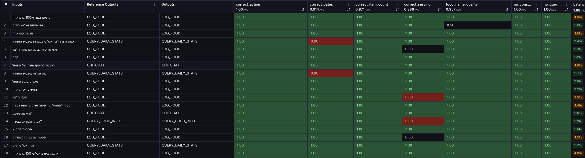
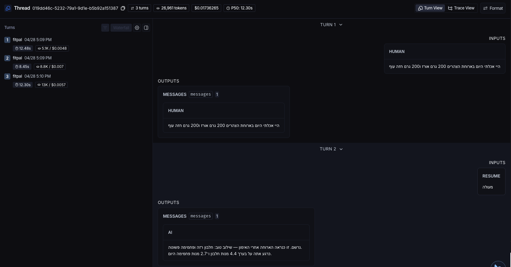
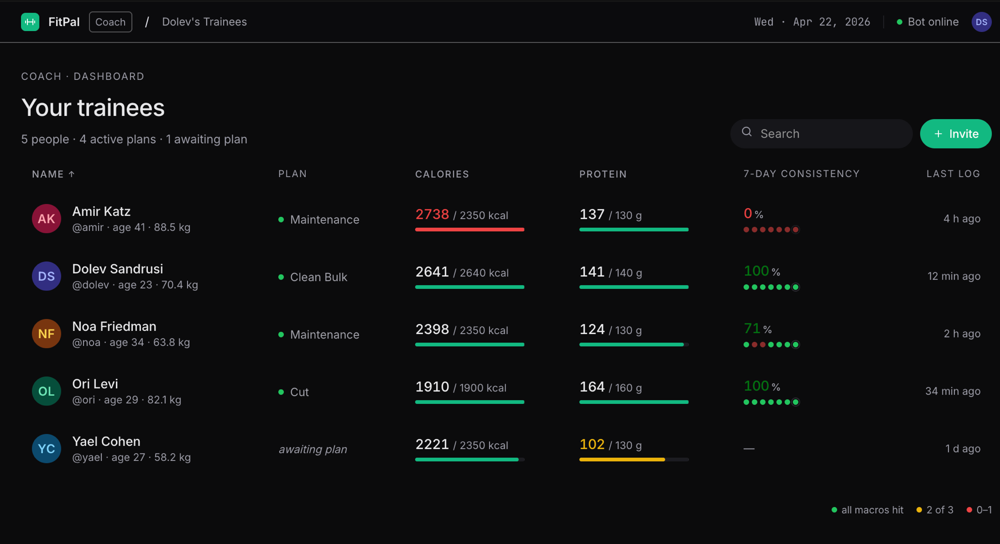
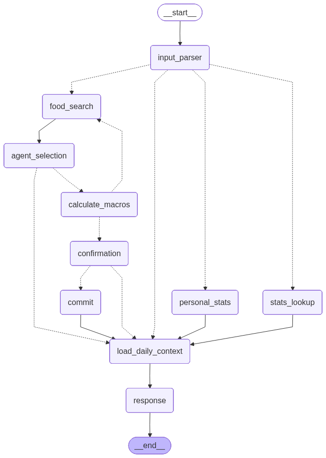
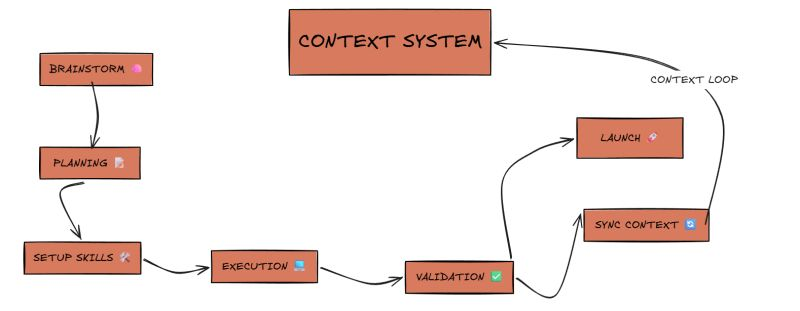

An AI nutrition coach that turns natural-language food messages into a structured, persisted daily log.
A real coaching tool — not a chatbot that guesses macros. The trainee logs food by texting naturally; the system resolves every item against a vetted database and writes the result to their personal log.
Same flow in Hebrew. Voice-to-text works. Multi-item meals work. Off-menu foods estimate, then persist.
Every macro is pulled from a vetted 335-item food catalog — the AI matches, never invents.

Every entry is scoped to the individual — isolated history, plan, and targets per user.

The coach sets the plan, the bot enforces it — the trainee just texts.

Most LangChain examples build agents as ReAct loops — hand the LLM a list of tools and let it think → call → think → call until it decides it's done. FitPal is built differently.

src/agents/nutritionist.py.3+ LLM round-trips per message. Each loop iteration burns tokens on "what should I do next?" even though the answer is always the same. The agent might decide to skip the confirmation step.
Control flow encoded once, in the graph. Faster, cheaper, predictable, trivially testable. The LLM still decides the interesting things — intent, items, phrasing — just not the route.
Two reasons it matters here: latency (the user is on Telegram, expecting chat-speed replies) and predictability (the agent cannot route around the HITL gate).
I'm sure you've heard about an agent that deleted an entire database. Not in FitPal.
Every LLM call in FitPal has a typed contract — a Pydantic schema that defines exactly what the model is allowed to return. The model can't go rogue because it can't produce output that doesn't conform.
# Every LLM boundary has a contract like this
class FoodIntakeEvent(BaseModel):
action: ActionType # enum — can only be one of 4 values
items: list[SingleFoodItem] # typed list — each item already validated
consumed_at: Optional[datetime]
# The node: one line to enforce it
structured_llm = llm.with_structured_output(FoodIntakeEvent)
parsed: FoodIntakeEvent = await structured_llm.ainvoke([...])This pattern repeats at every decision point in the graph — intent parsing, food selection, confirmation parsing, macro estimation. The LLM does the thinking; the schema enforces the shape.
For a coaching product where users make real decisions about real food, this distinction is everything.
Every number the user sees comes from the database — never from the model's weights.
The graph pauses and asks before anything touches the database — the user can say no.
Nothing reaches the database until the user looks at the parsed batch and says yes.
Targeted, not aspirational. The input parser is evaled because it carries the most responsibility — wrong answers there cascade. commit_node (which just writes a row) is not.
correct_action, correct_dates, correct_item_count, correct_serving. A regression pinpoints to a single responsibility.food_name_quality is graded by a second model with a rubric. "חזה עוף בגריל" → "chicken breast" vs "grilled chicken breast" are both fine.interrupt() with the user's reply. Every node, prompt, token, and ms is one click away.The prod date bug that motivated my current refactor was found this way: a user said "add to yesterday", the food landed on today. The trace showed the parser emitting consumed_at AND start_date simultaneously — a bug class the eval suite hadn't triggered. The trace is what made the root cause visible.
The PIV loop — Plan → Implement → Validate — with a context-loop on top that makes the workspace compound rather than calcify.

A plan-feature skill turns a brainstorm into a written plan with tasks, affected files, edge cases, and verification gates. Plan lives at docs/plans/<feature>.md.
execute reads the plan and implements it task-by-task in a clean chat, so planning context doesn't pollute the implementation window.
validation runs lint + three test tiers (unit, integration, graph-api) and reports back with paths. Red = fix and re-run.
sync-context updates CLAUDE.md, the affected skills, and adds new patterns or RCAs. The next cycle starts from a richer baseline.
Skills are versioned files in the repo that get edited every time something stops fitting.
| Skill | What it does |
|---|---|
prime | Loads and summarizes project context at session start |
plan-feature | Reads docs/patterns/ before drafting → plans automatically respect tool-first and async patterns |
validation | Knows FitPal's three test tiers + lint gate, reports failures with clickable paths |
commit | Encodes this repo's commit style by example — not typed by hand each time |
sync-context | Updates CLAUDE.md, skills, and patterns after a cycle |
langsmith-trace | Pulls a thread's full trace and feeds it straight into context — debugging becomes a one-liner |
| + 20 more skills — evals, UX loops, nutrition plan builder, Railway deploys, Obsidian notes, and more | |
The traces, evals, context system, and skills aren't just tooling — they're the building blocks of a development method where Claude is the developer.
Questions?